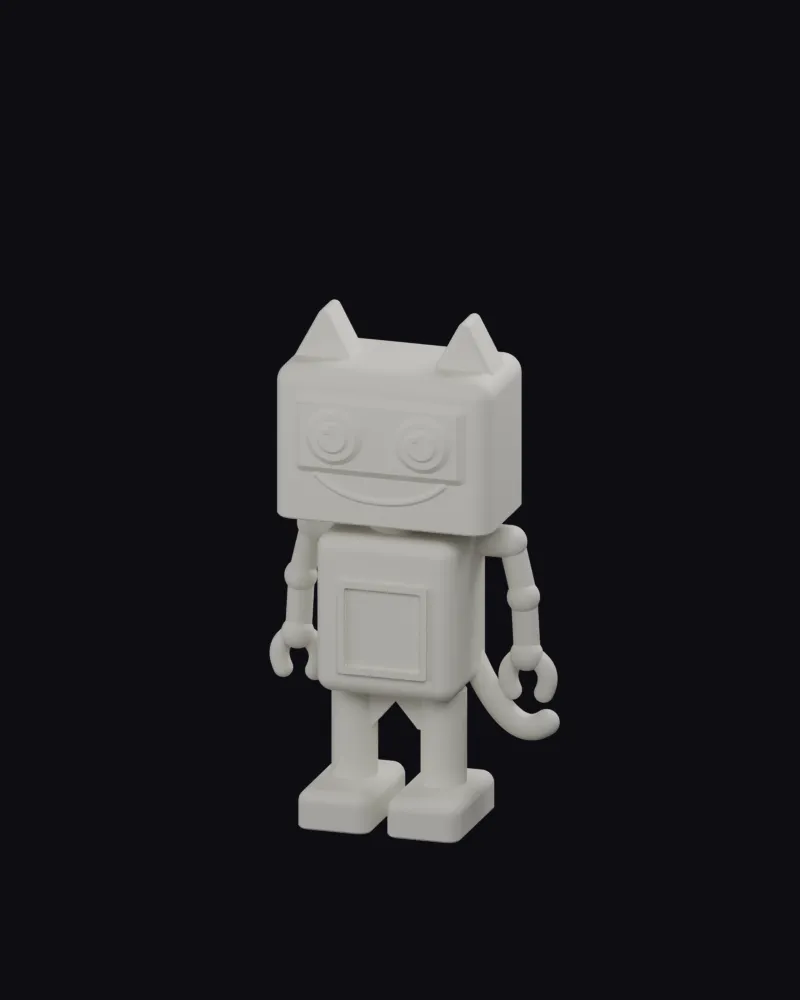
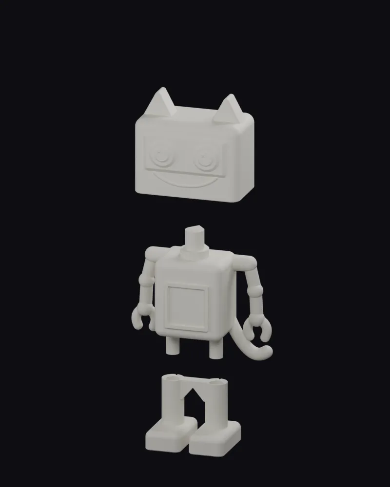
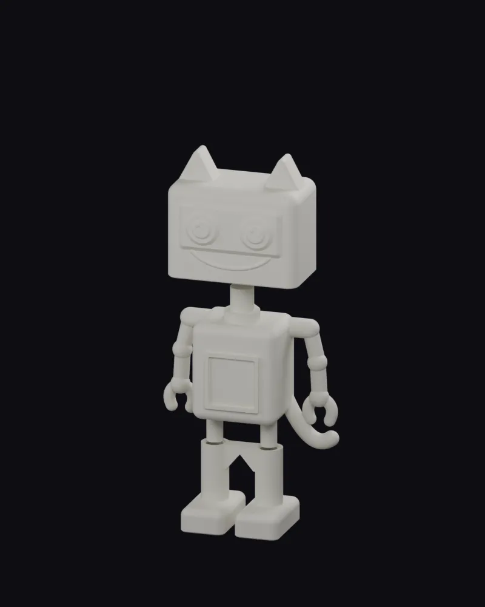
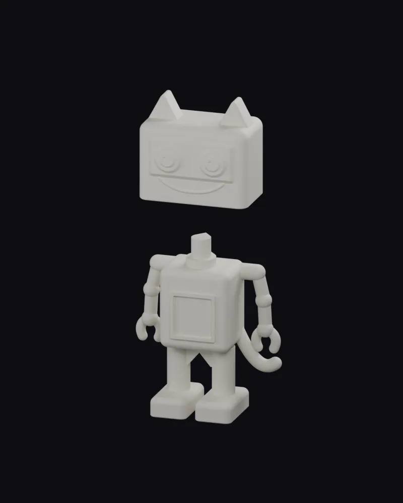
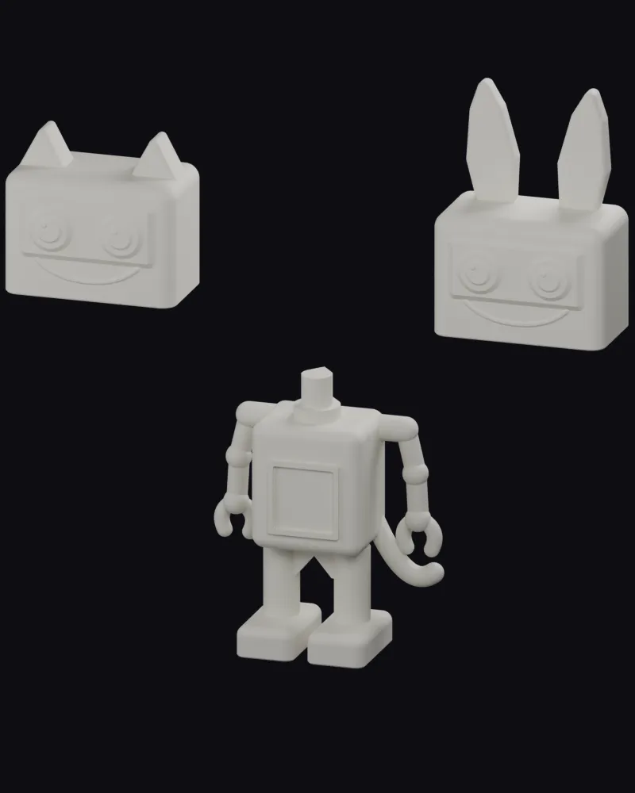
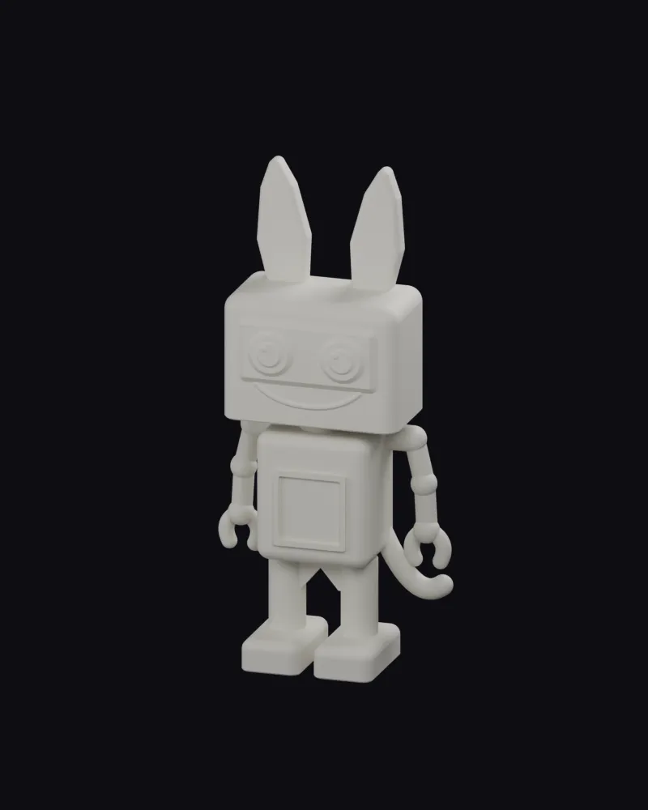
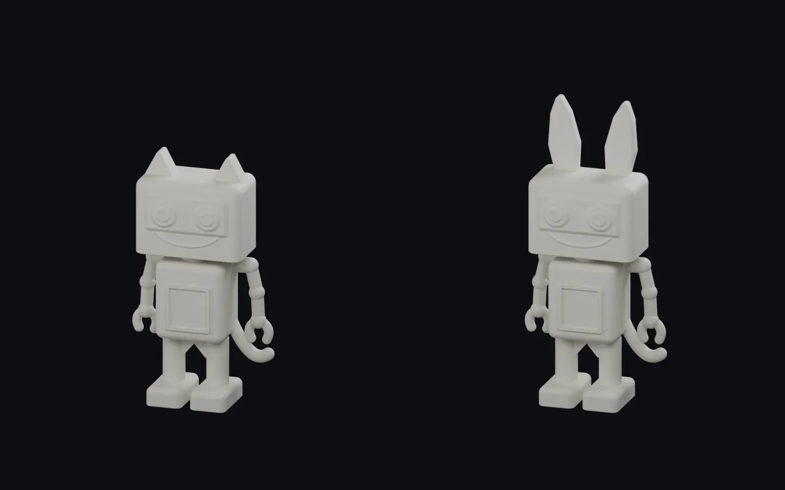

Контроль геометрии — этап B
Локальные рендеры Blender. Не браузерная приёмка сайта.

01-assembled-cat
02-exploded-cat
03-half-assembly
04-raised-cat
05-head-exchange
06-assembled-bunny
07-comparisonМакет 1440×900 · Макет 390×844